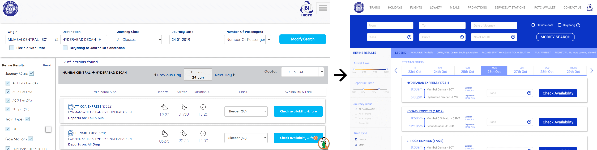

2. Train List Display
I started with the search header of the page, added required white space around the text fields and aligned them to the left, to create a visual partition between the data entry fields and the search button. I also added the field for quota, which is tucked away under the booking window. Having this option earlier is useful.
The sidebar was to add options for search options such as class, arrival and departure time preference etc. There were redundant fields such as source and destination stations, which is already present in the top header.
With a consistent aim to reduce cognitive stress caused by the excess of information on this website, I created a colour-based, graphical slider for departure timing. Yellow denotes daytime and blue denotes nighttime. This is intuitive to everyone - no matter their background. This also comes after feedback from a user that they once hurriedly booked an AM train instead of a PM train.
This next section is the date display section. I added a legend here because there are multiple short forms that users aren’t aware of, and when they try, they cannot find the legend. (I checked, it was deep down in the sidebar). Most importantly, users usually check for tickets on their desired date and then if there aren’t any available, they jump to dates around their desired date. The old interface only allowed users to flip through one date at a time. I changed this interface to create a week’s view of dates and their days.
Here we can also see a random Quota field, which belongs to the search section.
The most important section of the train search is the list of trains it returns as a result. In this section, I referred to the Eurorail website. Eurorail is used by tourists while visiting Europe, and most of the bookings are made online. Considering this use case, I assume that their interface would make a good reference point.
One of the most interesting insights from the user study was that 70% of the users thought that a cloud button implied the train plied in the monsoons, whereas in reality, it meant night time. This comes from a strong cultural bias for monsoons in India. We have seasonal rainfall and most of the population is extra cautious during this period. So, I decided to do away with the icons altogether, since there was already too much information in that section.
The final redesign of the section looks like this
